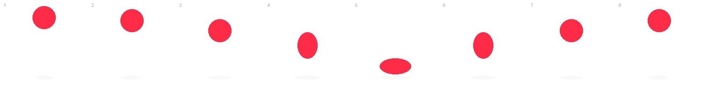

Ouvrez l'inspecteur : tout le CSS est dans cette page, commenté.
8 images de 200 × 200 px, côte à côte, sur une seule rangée : une planche de 1600 × 200 px. Les numéros sont dessinés dans l'image pour la démo.

background-position + steps(8)Une fenêtre de la taille d'une image. On déplace l'arrière-plan d'un coup sec, image par image.
steps()Même animation, en linear : la planche glisse au lieu de sauter d'une image à l'autre.
<img> + transformRedimensionnez la fenêtre : la balle suit. Et on n'anime que transform, comme le demandent les garde-fous du récit défilant.